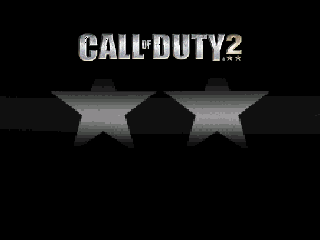

| App name | Call of Duty 2 |
|---|---|
| Target | Windows Mobile / 240×320 |
| Frontend | CLI |
| CPU backend | ARM / Unicorn |
| Best rating | ⭐️⭐️⭐️ |
| Result | Boots through GLES to the title screen |
| Version | Frontend | CPU | Rating | Remarks | Proof |
|---|---|---|---|---|---|
| PocketHLE current | CLI | ARM / Unicorn | ⭐️⭐️⭐️ | The software OpenGL ES layer reaches the title screen; gameplay is not yet claimed. | View |
| Rating | Description |
|---|---|
| ⭐️ | Completely broken: the app crashes immediately without any user interaction. |
| ⭐️⭐️ | Only the startup, intro, or part of the main menu is working. |
| ⭐️⭐️⭐️ | Some main content works, but with major issues or incomplete verification. |
| ⭐️⭐️⭐️⭐️ | The main content works with only small issues. |
| ⭐️⭐️⭐️⭐️⭐️ | Everything works. The app is fully usable. |
